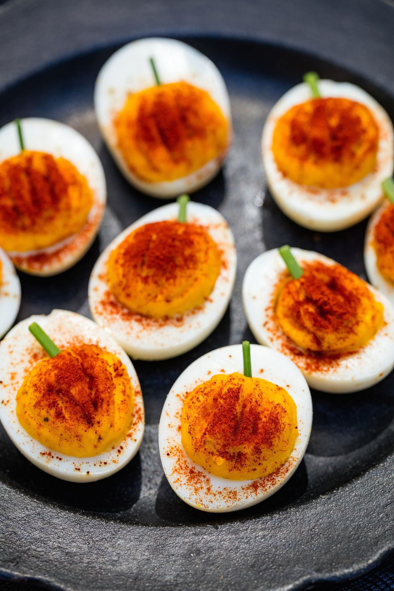

PUMPKIN DEVILED EGGS!
If "Deviled Eggs" doesn't already sound spooky enough, adding a Halloween themed twist on it for sure
will make the dish even more spooky! But most importantly, tasty!
This soft, airy, and creamy appetizer will surely be a big hit at your next Halloween party.
Learn how to make it with these quick and easy steps that requires very little ingredient, and a little finess!

Ingredients
- 12 large eggs
- 1/2 c. mayonnaise
- Juice of 1/2 lemon
- 1 1/2 tsp. Dijon mustard
- Kosher salt
- Freshly ground black pepper
- 2 tsp. paprika
- 4 chives, cut into small pieces
Instructions
- Place eggs in a single layer in a saucepan and add enough water to cover eggs with 2" of water. Bring to a boil, then reduce heat and cook, covered, 1 minute. Remove from heat and let sit, covered, 14 minutes, then rinse under cold water.
- Crack shells and carefully peel under cool running water.
- Halve eggs lengthwise. Spoon out yolks into a small bowl and place whites on a serving platter. Using a fork, mash yolks, then stir in mayonnaise, lemon juice, and Dijon and season with salt and pepper.
- Spoon or pipe mixture evenly among egg whites and smooth top.
- Carefully dust paprika all over yolk mixture, completely covering yolk. Use a sharp paring knife to make ridges down the paprika-dusted yolk to look like a pumpkin.
- Place chive above egg mixture to look like a stem before serving.

Dietary Info
Gluten free
Dairy free
Low carb
Low sugar
Serving Size
Serves 12
Calories per Serving
140